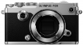

器材库 > APS及其以下画幅可换镜头数码相机 > PEN-F

规格总览
产品类型
M4/3画幅可换镜头数码相机
发布日期
2016-01-27
影像规格
影像传感器
Live MOS
影像传感器尺寸
17.4mm×13.0mm
总像素
约2180万
有效像素
约2030万
色彩空间
sRGB, Adobe RGB
静态图像尺寸
[RAW] 5184 x 3888[JPEG] 5184 x 3888 - 640 x 480
静态图像格式
JPEG, RAW, RAW+JPEG, MPO
画幅比
3:2, 4:3, 16:9, 1:1
短片尺寸
[MOV]1920x1080(FHD) / 30p, 25p, 24p1920x1080(FHD) / 60p, 50p1280x720(HD) / 60p, 50p, 30p, 25p, 24p[AVI]1280x720(HD) / 30p640x480(SD) / 30p
短片格式
AVI, MOV
防抖系统
内置五轴 兼容照片、视频的传感器位移防抖
除尘系统
超声波除尘 (图像传感器防尘系统)
镜头和对焦
镜头卡口
Micro 4/3
对焦系统类型
高速成像AF
对焦点
81区多个 AF
对焦模式
单个 AF (S-AF) / 连续 AF (C-AF) / 手动模式 (MF) / S-AF + MF / AF 跟踪 (C-AF + TR)
AF辅助灯
有
手动对焦
支持
曝光控制
测光系统
TTL 图像传感器测光
测光模式
点测光, ESP, 平均测光
测光范围
-2EV~20EV
曝光模式
iAUTO (可以实现Live Guide ), P: Program AE (可以实现Program 转换 ), A: 光圈优先 AE, S: 快门优先 AE, M: 手动 (可以有实时B门, 实时T门 和 实时合成), 定制1~4, Photo Story,场景选择 AE
图像模式
i-Enhance, Vivid, Natural, Muted,Portrait, 单色 定制, 肖像, 彩色创造, 艺术滤镜, 彩色模式，单色模式
场景模式
肖像，完美肖像，风景，纪念摄影，运动，手持夜景，夜景, 夜晚 +人物, 儿童, 亮键, 暗键， 数码防抖模式, 微距, 自然微距, 烛光，夕阳，文件资料，全景，烟火景色，海滩和雪景，鱼眼效果，广角，微距，摇拍，3D
创意滤镜
a.柔焦效果 b. 针孔效果 c. 白边效果 d. 艺术相框 e. 星光效果 f. 模糊效果 (顶部及底部, 左及右) g. 黑白效果 (无, 黄 橙， 红，绿) h. 色调效果 (无,褐，蓝，紫，绿) i. 阴影效果 (顶部及底部, 左及右)
快门类型
焦平面快门
快门速度
机械快门: 1/8000 - 60 秒., 带可选的 EV 调整步骤 (1/3, 1/2, 1)电子第一帘幕快门(防抖模式): 1/320 - 60 秒电子快门(静音模式): 1/16000 - 60 秒
闪光同步速度
1/250
曝光补偿
±3EV以1/3EV级调整
自动曝光锁
有
自动包围曝光
2, 3或 5帧 ，0.3 / 0.7 / 1.0EV 步可选, 7 帧 in 0.3 / 0.7EV 步，可选
ISO感光度
AUTO ISO: 可定制的, LOW (大约80) ‐ 25600 (默认: LOW - 1600) 手动 ISO: LOW (大约.80), 200 - 25600 (1/3 or 1 EV挡可选)
白平衡
自动白平衡, 7 预设白平衡, 4 拍摄白平衡, 定制白平衡(色温)
连拍
[连续拍摄 H 模式] 大约. 10 fps[连续拍摄 L 模式] 大约. 5 fps
闪光灯
内置闪光灯
无
外接闪光灯
FL-LM3
取景器/显示屏
取景器
OLED电子取景器
取景范围
100%
取景放大倍率
约1.08~1.23倍
屈光度调节范围
-4 ~ +2m-1
LCD尺寸
3.0英寸
LCD像素
约104万
LCD特性
触摸屏, 翻转屏
亮度调节级数
±7级
Live View
有
Live View 显示
大约 100% 视野, 曝光补偿预览, WB 调节预览 渐变预览, 脸部识别预览 (最多 8 脸部), 网格线, 放大显示 (x3 / x5 / x7 / x10 / x14), 显示模式: 标准，柱状图，高光 & 阴影, 水平仪, Off (只图像)
文件输入/输出
存储卡
SD/SDHC, SDXC
数据接口
USB2.0
视频/音频接口
Video 输出 (NTSC/PAL), Micro HDMI 接口
无线功能
Wi-Fi
支持打印协议
PictBridge, DPOF
电源
电池
BLN-1锂电池
续航能力
可记录图片约 330 张 (使用 BLN-1 and TOSHIBA SD IS开，CIPA测试标准)可拍摄视频约80分钟
机身规格
颜色
黑色, 银/黑色
尺寸
约124.8×72.1×37.3mm
重量
仅机身约373g含BLN-1电池和存储卡约427g
其它
配件端口
热靴, 快门线, 脚架螺丝孔
支持语言
中文（简体）, 中文（繁体）, 英语, 日语, 捷克语, 丹麦语, 荷兰语, 芬兰语, 法语, 德语, 印度尼西亚语, 意大利语, 韩语, 挪威语, 波兰语, 葡萄牙语, 俄语, 西班牙语, 瑞典语, 土耳其语, 匈牙利语, 泰语, 希腊语, 乌克兰语, 罗马尼亚语, 保加利亚语, 克罗地亚语, 斯洛伐克语, 斯洛文尼亚语, 拉脱维亚语, 爱沙尼亚语, 立陶宛语, 塞尔维亚语, 马来语
工作温度
0~40℃
工作湿度
30~90%
附件
FL-LM3 闪光灯, BLN-1 锂电池, BCN-1 ；锂电池充电器, USB 线, 肩带, Olympus Viewer 3 (CD-ROM), 说明手册, 保修卡
wuwei07142017-07-25 11:194 分
操作性 5.00功能性 5.00美观性 5.00趣味性 0.50耐用性 5.00性价比 2.50解像力 4.50色彩还原 4.50
忍者便利屋2016-09-29 01:094.5 分
操作性 4.50功能性 4.50美观性 5.00趣味性 5.00耐用性 4.00性价比 4.00解像力 4.50色彩还原 4.50
忍者便利屋2016-09-29 00:14
哈斯2016-06-20 01:174.5 分
操作性 4.50功能性 4.50美观性 5.00趣味性 5.00耐用性 4.50性价比 4.50解像力 4.00色彩还原 4.00
哈斯2016-06-20 01:16
产品图 / 样片
奥林巴斯PEN-F
评测 / 相关文章
- 详细内容 （存档）
- ［资讯］奥林巴斯PEN-F官方样片欣赏 （存档）
相关文章
- ［资讯］跨世纪的经典再现 奥林巴斯新品PEN-F发布 （存档）
- ［资讯］奥林巴斯PEN-F官方样片欣赏 （存档）
- ［资讯］奥林巴斯PEN-F的前世今生 （原站已下线）
- ［资讯］奥林巴斯PEN-F和300/4IS真机实拍 （原站已下线）
- ［资讯］日本选出2016最佳相机与镜头 （存档）
- ［资讯］复古+骚气 奥林巴斯为PEN-F发布专用手柄 （原站已下线）
- ［试用］再向经典致敬 奥林巴斯PEN-F详细评测 （原站已下线）
- ［资讯］PEN-F驾到 赏新好礼大放送 （原站已下线）
- ［资讯］隽永初心、纯粹情怀 奥林巴斯PEN-F开箱 （原站已下线）
- ［资讯］E-M1II和PEN-F的固件更新 （存档）
- ［资讯］Imaging Resource辣评相机中的入门神器 （存档）
- ［资讯］JPG直出哪家强 八家相机画质大比拼 （存档）
- ［资讯］M4/3实力派 DXO公布PEN-F成绩 （原站已下线）
- ［试用］泡菜PEN-F+7-14&12-40意大利自由行 （原站已下线）
- ［试用］富士奥巴与松下谁是无反单色之王 （存档）